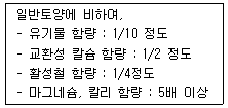
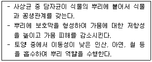

유기농업기사 (2013-06-02 기출문제)
1과목: 재배원론
1. 감자(뿌리작물)의 수량계산 공식으로 옳은 것은?
- 식물체당 무게 × 단위면적당 식물체 수
- 단위면적당 덩이줄기 수 × 식물체당 무게
- 단위면적당 식물체 수 × 단위면적당 덩이줄기 수
- 단위면적당 식물체 수 × 식물체당 덩이줄기 수 × 덩이줄기의 무게
(정답률: 59%)

2. 다음 중 무배유종자로만 이루어진 것은?(오류 신고가 접수된 문제입니다. 반드시 정답과 해설을 확인하시기 바랍니다.)
- 벼, 팥
- 콩, 팥
- 보리, 벼
- 옥수수, 콩
(정답률: 6%)
3. 내건성(drought resistance)이 강한 작물의 형태적 특성이 아닌 것은?
- 표면적/체적의 비가 작다.
- 뿌리가 깊고 지상부에 비하여 근군의 발달이 좋다.
- 기공의 크기가 크고, 밀도가 적다.
- 저수 조직이 발달되어 있다.
(정답률: 71%)
4. 식물 생장에 대한 무기영양설을 제창한 사람은?
- 리비히
- 다윈
- 드브리스
- 우장춘
(정답률: 85%)
5. 종자의 저장양분 중 전분의 분해와 합성에 관련되는 효소는?
- amylase -phosphorylase
- phosphoryase-diastase
- protease-amylase
- lipase-diastase
(정답률: 36%)
6. 벼 내도열병의 특성을 바르게 설명한 것은?
- 탄소/질소율이 높은 품종이 강하다.
- 병원균 침입은 규산/질소율이 낮은 품종이 어렵다.
- 가용질소율이 높은 품종이다.
- 벼의 표피세포가 질소화된 품종이다.
(정답률: 50%)
7. 작물의 분화과정에서 첫 번째 단계는?
- 도태와 적응을 통한 순화의 단계
- 유전적 변이의 발생 단계
- 유전적인 안정상태를 유지하는 고립 단계
- 어떤 생태조건에서 잘 적응하는 단계
(정답률: 83%)
8. 품종의 기상생태형에 관한 설명으로 올바른 것은?
- 묘대일수감응도는 감온형인 품종이 감광현인 품종보다 높다.
- 파종과 모내기를 일찍이 할 때 만생종은 감온형이다.
- 조기수확을 목적으로 조파조식 할 때에는 감광형 품종이 적합하다.
- 만식적응성은 감온형이 감광형보다 크다.
(정답률: 53%)
9. 식물의 생육이나 성숙을 생장과 분화의 두 측면으로 보는 지표로 가장 적당한 것은?
- C/N율
- T/R율
- G-D 균형
- DD50
(정답률: 67%)
10. 하루 중의 기온변화, 즉 기온의 일변화(변온)와 식물의 동화물질 축적과의 관계를 바르게 설명한 것은?
- 낮의 기온이 높으면 광합성과 합성물질의 전류가 늦어진다.
- 기온의 일변화가 어느정도 커지면 동화물질의 축적이 많안진다.
- 낮과 밤의 기온이 함께 상승할 때 동화물질의 축적이 최대가 된다.
- 낮과 밤의 기온차가 적을수록 합성 물질의 전류는 촉진 되고 호흡 소모는 적어진다.
(정답률: 63%)
11. 광이 작물 생육에 미치는 영향에 대한 설명으로 옳지 않은 것은?
- 광합성은 청색광과 적생광이 효과적이다.
- 굴광성은 청색광이 가장 효과적이다.
- 과실의 착색은 적색광이 효과적이다.
- 줄기의 신장억제는 자외선이 효과적이다.
(정답률: 40%)
12. 벼의 만식적응성과 관련이 깊은 특성은?
- 묘대일수감응도
- 내비성
- 내도복성
- 추락저항성
(정답률: 87%)
13. 나팔꽃 대목에 고구마 순을 접목시켜 재배하는 목적은?
- 개화 촉진
- 경엽의 수량 증대
- 내건성 증대
- 왜화재배
(정답률: 53%)
14. 작물의 풍해에 대한 설명으로 잘못된 것은?
- 벼에서 목도열병이 발생한다.
- 상처가 나면 광산화반응을 일으킨다.
- 풍속이 강해지면 광합성이 증대된다.
- 수정이 저해된다.
(정답률: 89%)
15. 동상해의 재배적 대책으로 옳지 않은 것은?
- 맥류는 답압을 한다.
- 채소와 화훼류는 보온재배를 한다.
- 맥류재배에서 이랑을 세워 뿌림골을 깊게 한다.
- 맥류재배에서 칼리질 비료를 줄이고, 퇴비를 종자 밑에 준다.
(정답률: 59%)
16. 광합성에 대한 설명으로 틀린 것은?
- 고립상태 작물의 광포화점은 전광의 30 ~60%범위이다.
- 남북이랑은 동서이랑에 비하여 수광량이 많다.
- 진정광합성속도가 0이 되는 광도를 광보사점이라 한다.
- 밀식시 줄사이를 넓히고 포기사이를 좁히면 군락 하부로의 투광률이 좋아진다.
(정답률: 25%)
17. 작물의 생육 중 냉온을 만나면 일어나는 현상으로 옳지 않은 것은?
- 질소, 인산, 가리, 규산, 마그네슘 등의 양분흡수가 저해된다.
- 물질의 동화와 전류가 저해된다.
- 질소동화가 저해되어 암모니아 축적이 적어진다.
- 호흡이 감퇴되어 원형질 유동이 감퇴ㆍ정지하여 모든 대사기능이 저해된다.
(정답률: 84%)
18. 광과 작물의 생리작용에 대하여 올바르게 기술한 것은?
- 광합성에 유리한 광파장은 황색과 주황색이다.
- 굴광현상을 유도하는 광은 청색광이다.
- 벼의 광호흡은 옥수수보다 작다.
- 알파파에 광이 조사되면 기공을 닫게 하여 증산을 억제한다.
(정답률: 77%)
19. 파종양식에 따라 산파하게 되므로 파종량이 가장 많이 소요되는 작물은?
- 메밀
- 옥수수
- 들깨
- 배추
(정답률: 65%)
20. 다음 중 T/R의 비율이 감소하는 경우는?
- 적화 및 적과
- 토양통기의 불량
- 질소질비료의 다량 시용
- 파종기 및 이식기의 지연
(정답률: 41%)
2과목: 토양비옥도 및 관리
21. 토양 내 질소의 고정화 반응과 무기화반응이 동등하게 일어날 수 있는 C/N율의 범위는?
- 10~20
- 20~30
- 30~40
- 40~50
(정답률: 57%)
22. 토양의 양이온교환용량에 대한 설명 중 틀린 것은?
- 양이온교환용량은 토양이 양이온을 흡착ㆍ교환할 수 있는 능력을 나타낸다.
- 양이온교환용량이 클수록 더 많은 양분을 보유할 수 있다.
- 사토가 양토에 비하여 양이온교환용량이 크다.
- 유기물함량이 높을수록 양이온교환용량은 증가한다.
(정답률: 67%)
23. 다음 특성을 가지는 논토양은?

- 사력질답
- 습답
- 염해지답
- 노후화답
(정답률: 38%)
24. 염류토양과 나트륨성 토양을 구분한 토양침출액의 화학적 반응으로 알맞은 범위에 해당하는 설명은?
- ECe(전기전도도)는 염류토양은 4dS/m이상, 나트륨성 토양은 4dS/m이하이다.
- ESP(교환성나트륨페센트)는 염류토양은 15%이상, 나트륨성 토양은 15%이하이다.
- SAR(나트륨흡착비)는 염류토양은 13이상, 나트륨성 토양은 13이하이다.
- pH값은 염류토양은 8.5이상, 나트륨성 토양은 8.5이하이다.
(정답률: 37%)
25. 산성토양에서 활동이 가장 왕성한 미생물은?
- 질산균
- 근류균
- 방사상균
- 사상균
(정답률: 64%)
26. 논토양의 토색이 청회색인 토양의 특징에 대한 설명으로 틀린 것은?
- 인산의 용해도가 증가한다.
- 토양산도가 중성화 된다.
- 토양입단이 파괴된다.
- 호기성 미생물의 활동이 증가한다.
(정답률: 39%)
27. 토양에 존재하는 가장 간단한 독립된 규소사면체가 결정단위구조인 1차 광물로서 풍화가 가장 빠 른 광물은?
- 정장석
- 운모
- 휘석
- 감람석
(정답률: 69%)
28. 다음 중 식물생육에 꼭 필요한 다량원소가 아닌 것은?
- S
- P
- Si
- Mg
(정답률: 67%)
29. 다음 설명에 알맞은 토양미생물은?

- 균근
- 진균
- 조류
- 방사선균
(정답률: 64%)
30. 다음 중 탄질비가 가장 높은 유기물은?
- 토양미생물체
- 옥수수대
- 두과식물
- 톱밥
(정답률: 70%)
31. 토양의 소성지수를 측정한 결과 A토양은 25이고, B토양은 20이었다. 두 토양을 올바르게 비교 설명한 것은?
- A 토양이 B토양보다 소성상태에서 수분을 많이 보유한다.
- B토양이 A토양보다 소성상태에서 총수분 함량이 많다.
- A토양은 B토양보다 적은 수분량으로 소성상태를 유지한다.
- B토양은 A토양보다 점토함량이 많은 토양이다.
(정답률: 48%)
32. 토양의 형태적 분류상 비성대토양의 대부분을 차지하며, 발달되지 않은 새로운 토양은?
- 몰리솔
- 벨르티솔
- 엔티솔
- 옥시솔
(정답률: 79%)
33. 암모니아태질소를 심층시비 하는 목적은?
- 산화층에 시비하기 위해
- 암모니아화 작용을 촉진하기 위해
- 질산화작용을 촉진하기 위해
- 환원층에 시비하여 질화작용을 억제하기 위해
(정답률: 67%)
34. 콩과 식물로서 뿌리혹박테리아 질소고정능력이 다음 중 가장 낮은 작물은?(오류 신고가 접수된 문제입니다. 반드시 정답과 해설을 확인하시기 바랍니다.)
- 알팔파
- 대두
- 완두
- 레드클로버
(정답률: 39%)
35. 복합비료 18-18-18 한 포(25kg)에 들어 있는 질소의 양은 얼마인가?
- 25KG
- 18KG
- 8.3KG
- 4.5KG
(정답률: 48%)
36. 다음 중 농업용수의 부영양화의 원인으로 가장 거리가 먼 것은?
- 가축 분뇨
- 가정 폐수
- 가두리양식장의 사료찌꺼기
- 중금속이 함유된 폐광 침출수
(정답률: 30%)
37. 토양을 조사하고 분류할 때 기본적으로 토양의 단면 특성을 파악해야 한다. 이 때 조사해야 할 특성에 해당하지 않는 것은?
- 토양층위의 발달
- 토성
- 토양미생물 구성
- 토양 구조
(정답률: 67%)
38. 최대용수량이 45%, 포장용수량은 35%, 초기위조점의 수분함량은 15%, 영구위조점의 수분함량은 10%였다. 이 토양의 유효수분함량은?
- 20%
- 25%
- 30%
- 35%
(정답률: 62%)
39. 산성암, 중성암, 염기성암의 분류기분이 되는 것은?
- SiO2
- Al2O3
- P2O5
- Fe2O3
(정답률: 36%)
40. 토양 중 부식의 기능으로 틀린 것은?
- 인산 집적량 증대
- 보수력 증대
- 양이온교환용량 증대
- 유해물질의 독성 감소
(정답률: 54%)
3과목: 유기농업개론
41. 일반농가가 유기축산으로 전환하거나 유기가축이 아닌 가축을 유기농장으로 입식하여 유기 축사물을 생산ㆍ판매하려는 경우에는 일정한 전환기간 이상을 유기축산물인증기준에 따라 사육해야 한다. 친환경농업육성법에 규정하고 있는 축종의 생산물별 최소사육기간으로 틀린 것은?
- 한ㆍ육우(식육)-입식 후 출하 시까지 최소 6개월 이상
- 돼지(식육)-입식 후 출하 시까지 최소 5개월 이상
- 육계(식육)-입식 후 출하 시까지 최소 3주 이상
- 산란계(알)-입식 후 3개월
(정답률: 62%)
42. 유기농에서 토양관리와 지력배양 방법이 아닌 것은?
- 유기질비료의 과다시비
- 동식물 폐기물 재활용
- 재생 불가능한 자원 최소화
- 토양 생물학적 활동 촉진
(정답률: 75%)
43. 유기시설재배시 토양내 배수불량으로 인해 나타나는 현상으로 틀린 것은?
- 토양과습 및 통기불량
- 토양내 산소공급의 억제
- 토양유기물 분해의 지연
- 양분의 공급과 흡수의 향상
(정답률: 62%)
44. 우리나라에서 유기농후사료 중심의 유기축산의 문제점으로 틀린 것은?
- 물질순환의 문제
- 국내 생산의 어려움
- 고가의 수입 유기농후사료
- 축산물의 품질이 떨어짐
(정답률: 48%)
45. 논토양의 개량방법으로 틀린 것은?
- 암거배수
- 심경
- 객토
- 표토파쇄
(정답률: 60%)
46. 가축에 급여하는 사료의 소화율(%)의 계산공식으로 옳은 것은?
- (섭취한 양)/(섭취한 양-배설한 양) × 100
- (배설한 양/ 섭취한 양) × 100
- (섭취한 양-배설한 양)/(섭취한양) × 100
- (섭취한 양-배설한 양)/(배설한 양) × 100
(정답률: 60%)
47. 유기농업으로의 전환기간 중 토양에 과잉 공급될 경우 미생물의 활동을 억압하고 두과작물의 공중질소고정능력을 감소시키며 작물체의 병해충저항력을 낮추는 성분은?
- N
- P
- Ca
- Fe
(정답률: 29%)
48. 독립영양생물로 토양 생성에 관여하고 토양구조의 향상에 도움을 주며, 동남아권에서 벼에 질소를 공급하기 위하여 번식시켜 이용하기도 하는 토양미생물의 한 종류는?
- 조류
- 균류
- 세균류
- 방사상균
(정답률: 40%)
49. 천적의 이용 및 관리 방법으로 적절하지 않은 것은?
- 천적의 먹이를 제공하기 위해 일부 병충들을 포장 내에 존재시킨다.
- 간작 및 혼작을 통해 다양한 작물을 경작한다.
- 화학적 방제를 이용하여 병충해 제어를 최소화한다.
- 천적이 먹이를 먹을 수 있고 숨을 수 있는 장소 제공하기 위해 서식지 내 알맞은 식물을 배치한다.
(정답률: 60%)
50. 다음 중 다년생인 논의 잡초는?
- 물달개비
- 올미
- 사마귀풀
- 강피
(정답률: 37%)
51. 공중질소를 고정하여 토양비옥도를 증진시켜 주는 녹비작물이 아닌 것은?
- 자운영
- 알팔파
- 헤어리베치
- 티모시
(정답률: 34%)
52. 품종의 분류 중 내력(유래)에 따른 분류를 옳은 것은?
- 조생종, 중생종, 만생종
- 재래품종, 육성품종, 도입품종
- 육성품종, 종, 아종
- 일반품종, 식용품종, 특수품종
(정답률: 48%)
53. 다음 중 병해충이나 잡초방제를 위한 방법으로 가장 거리가 먼 것은?
- 기계적 경운
- 물리적 제초
- 생물활성제 사용
- 점토(벤토나이트, 펄라이트, 제올라이트 등) 사용
(정답률: 63%)
54. 식물육종법인 계통육종과 집단육종의 설명으로 틀린 것은?
- 계통육종은 F2세대로부터 선발을 시작한다.
- 집단육종은 잡종초기세대에 집단재배하기 때문에 유용 유전자를 상실할 염려가 적다.
- 계통육종은 육종재료의 관리와 선발에 많은 시간ㆍ노력ㆍ경비가 든다.
- 집단육종은 잡종초기세대에 선발노력이 필요하며, 집단재배기간 동안 육종규모를 줄이기 어렵다.
(정답률: 39%)
55. 최적의 퇴비화에 적합한 모재료인 것은?
- 녹병이나 바이러스 등에 감염된 식물체
- 소, 돼지, 닭의 축분
- 단단한 가시 등의 재료
- 햇볕에 1차적으로 완전히 건조되지 않은 영년생잡초
(정답률: 60%)
56. 동물적 잡초 제어방법에 이용되는 것은?
- 왕우렁이
- 지렁이
- 메뚜기
- 땅강아지
(정답률: 50%)
57. 유기축산에 허용되는 유기배합사료 제조용 단미사료가 아닌 것은?
- 해조류
- 곡물류
- 식염류
- 항산화제
(정답률: 67%)
58. 유기농 수도재배에서 볍씨의 소독과 침종에 대한 설명으로 옳지 않은 것은?
- 물리적인 소독방법으로 냉수온탕침법이 있다.
- 볍씨의 침종과정이 끝나면 이어서 소독작업을 실시한다.
- 볍씨의 침종시간은 15℃에서 약 6~7일정도 소요된다.
- 대체로 볍씨는 중량의 22.5%의 수분을 흡수하면 발아할 수 있다.
(정답률: 37%)
59. 유기사료 중 조사료에 해당하지 않는 것은?
- 사일리지
- 건초
- 볏짚
- 옥수수
(정답률: 44%)
60. 타식성작물 중 자웅이주에 해당되는 작물은?
- 옥수수
- 오이
- 시금치
- 고구마
(정답률: 56%)
4과목: 유기식품 가공.유통론
61. 상품원가가 낮아지고 이익극대화를 위해 시장점유율을 유지하는 수명주기는?
- 성장기
- 도입기
- 성숙기
- 쇠퇴기
(정답률: 40%)
62. D값이 121℃에서 2분인 세균포자의 수를 103으로부터 100으로 감소시킬 때의 F값은?
- 1분
- 3분
- 6분
- 9분
(정답률: 43%)
63. 유기식품에 대한 소비자의 의향과 욕구는?
- 정상가격, 구매의 편리성, 대량구매
- 대량생산, 대량소비, 대량유통
- 확실한 품질, 정가매매, 상점의 거리
- 확실한 품질, 저렴한 가격, 구매의 편리성
(정답률: 67%)
64. 다음 중 농산물 유통의 특성을 잘못 설명한 것은?
- 농산물은 같은 품종이라 하더라도 크기와 품질이 같지 않아 표준화 및 규격화가 어렵다.
- 영세한 생산 규모와 복잡한 유통경로는 많은 유통비용을 유발한다.
- 농산물은 저장 및 보관하는데 많은 면적과 공간을 차지한다.
- 농산물의 수요와 공급은 탄력적이므로 가격의 등 락이 크다.
(정답률: 48%)
65. 초고압에 의한 식품살균에 대한 설명으로 틀린 것은?
- 가열처리를 하지 않으므로 영양성분, 향기의 변화가 없다.
- 오차가 적고 균일한 가공처리가 가능하다.
- 대형화, 연속처리가 곤란하다.
- 수분이 적은 식품이나 다공질의 식품에 적당하다.
(정답률: 32%)
66. 포도주스의 제조와 관계없는 공정은?
- 파쇄
- 여과
- 가열
- 증류
(정답률: 59%)
67. 유기식품 가공시설에서 위생관리의 요소가 아닌 것은?
- 품질관리인 지정
- 위생관리 방식
- 세척방식
- 세척제 및 소독제
(정답률: 59%)
68. 분유를 제조할 때 주로 사용되는 건조 방법은?
- 분무건조
- 열풍건조
- 동결건조
- 드럼건조
(정답률: 50%)
69. 유통경로상 도매업으로 분류될 수 있는 것은?
- 편의점
- 할인점
- 백화점
- 대리점
(정답률: 60%)
70. 다음 중 진공포장에 적당한 식품은?
- 과일
- 채소
- 버섯
- 과자
(정답률: 74%)
71. 유기적 취급기준 중 기록 및 접근보장 설명으로 옳지 않은 것은?
- 사업자는 유기식품의 취급전반에 관한 기록을 작성하여야 하며 최소 2년간 보존해야 한다.
- 사업자는 가공, 포장, 저장, 운송, 판매 그 밖에 취급에 관한 유기적 관리 지침을 문서로 작성하고 보존해야한다.
- 사업자는 유기원료, 첨가물, 보조제, 세척제, 그 밖의 투입 자재의 구매, 입고, 출고, 사용기록에 관한 기록을 작성하고 보존하여야 한다.
- 사업자는 가공과 유통의 유기적 관리체계 구축을 위하여 문서화된 계획을 수립해야 한다.
(정답률: 46%)
72. 다음 분석법 중 GMO(유전자변형생물체) 함유량을 측정하는 장비명은?
- Realtime PCR
- 종이 크로마토그래피
- 2-D electrophoresis
- 액체 크로마토그래피
(정답률: 48%)
73. 다음 식품 위해미생물 중 발육에 필요한 최저수분 활성도가 가장 낮은 것은?
- E. coli
- Clostridium botulinum
- Xeromyces
- Salmonella
(정답률: 43%)
74. HACCP 개발 준비 단계를 알맞은 순서대로 제시한 것은?
- HACCP 팀 구성→식품 특성 및 유통방법 기술→식품 용도 및 대상 소비자 파악→공정 및 설비 배치도 작성→공정 및 설비 배치도 현장 검증
- HACCP 팀 구성→식품 용도 및 대상소비자 파악→공정 및 설비 배치도 작성→식품 특성 및 유통방법 기술→공정 및 설비 배치도 현장검증
- HACCP팀 구성→공정 및 설비 배치도 작성→식품특성 및 유통방법 기술→식품 용도 및 대상소비자 파악→공정 및 설비 배치도 현장 검증
- 식품 용도 및 대상 소비자 파악→HACCP 팀 구성→공정 및 설비 배치도 작성→식품 특성 및 유통방법 기술→공정 및 설비 배치도 현장 검증
(정답률: 50%)
75. 다음 중 유기식품이 아닌 것은?
- 유기농산물
- 유기축산물
- 유기가공식품
- 소금
(정답률: 59%)
76. 비율 1.0 kcal/℃·kg 인 물 1000kg을 4℃에서 74℃로 가열하고자 한다. 가열 중 열손실이 50%이면 필요한 열량은 얼마인가?
- 1000kcal
- 70000kcal
- 140000kcal
- 280000kcal
(정답률: 54%)
77. 전자레인지에서 마그네트론의 역할로 옳은 것은?
- 전기에너지를 미세하게 절단하여 전송하는 장치
- 마이크로파 발진기의 손상을 막아주는 보조장치
- 전기에너지를 마이크로파 에너지로 변환시켜주는 장치
- 마이크로파가 가열부에 많이 전달되도록 유도하는 장치
(정답률: 54%)
78. 바실러스 시리우스에 의해 유발되는 식중독과 관련이 없는 것은?
- 전분 분해작용이 강하고 토양 등 자연계에 널리 분포하고 있다.
- 아포형성균이며 통성혐기성 균이다.
- 균체외 독소는 생산하지 않는다.
- 쌀밥이나 볶음밥에서 분리할 수 있다.
(정답률: 27%)
79. 분자 내에 자성 쌍극자를 다량 함유한 DNA나 단백질 등의 생물분자에 5~10 Tesla 정도의 자기장을 5-500 kHz로 처리하여 분자 내 공유결합을 파괴시켜 미생물을 사멸하는 방법은?
- 강력 광펄스 살균
- 고전장 펄스 살균
- 마이크로파 살균
- 진동 자기장 펄스 살균
(정답률: 48%)
80. 농산물이 포장되어 있는 필름의 적절한 투과성에 의해 포장 내부의 gas조성이 적절하게 유지되어 농산물을 신선하게 보관할 수 있는 방법에 해당하는 것은?
- MA 저장
- CA저장
- 가스충전 포장
- 무균밀봉 포장
(정답률: 56%)
5과목: 유기농업관련 규정
81. 유기식품의 생산ㆍ가공ㆍ표시ㆍ유통에 관한 Codex 가이드라인에서 규정한 가축이 유기농장의 건전화에 기여하는 이유로 거리가 먼 것은?
- 토양 비옥도의 유지ㆍ개선
- 방목시 초지 식물군의 관리
- 농장의 생물학적 다양성을 높이고, 보완적인 상호작용 촉진
- 농작물에 발생되는 병해충의 방제
(정답률: 8%)
82. 유기농림산물 인증기준에서 유기ㆍ무항생제사료 준에 맞지 아니한 사료를 먹인 농장 및 경축순환농법으로 사육하지 아니한 농장에서 유래된 퇴비의 사용조건에 대한 설명으로 틀린 것은?
- 퇴비화 과정에서 요구되는 일정 온도를 유지하고, 그 기간 동안에 5회 이상 뒤집어야 한다.
- 퇴비에 항생물질이 포함되지 아니하여야 한다.
- 퇴비화 과정 중 퇴비더미가 55~75℃를 유지하는 기간이 10일 이상 되어야 한다.
- 유해성분 함량은 「비료관리법」에 따른 비료공정규격 중 퇴비규격의 2분의 1을 초과하지 아니하여야 한다.
(정답률: 24%)
83. 친환경농산물인증 유효기간을 연장 받으려면 유효기간 만료 며칠 전까지 신청서를 제출해야 하나?(오류 신고가 접수된 문제입니다. 반드시 정답과 해설을 확인하시기 바랍니다.)
- 7일 전
- 10일 전
- 20일 전
- 1개월 전
(정답률: 16%)
84. 유기식품의 생산ㆍ가공ㆍ표시ㆍ유통에 관한 Codex 가이드라인의 규정이다. 유기농장에서 동물약품을 사용할 때 원칙과 거리가 먼 것은?
- 특정 질병이나 건강문제가 발생하고 있거나 발생할 수 있는 장소에서 다른 치료방법이나 처리방법이 없거나 법으로 요구될 때는 예방접종이나 구충제ㆍ치료제의 사용이 허용된다.
- 약초요법(항생제 제외) 제제, 동종요법 제제, 추적제가 해당 축종이나 질병에 효과가 있을 경우에는 이를 화학 동물약품이나 항생제에 우선하여 사용 해야 한다.
- 질병을 예방할 목적으로 화학 동물 약품이나 항생제를 사용하는 것은 금지한다.
- 성장이나 생산을 촉진할 목적으로 하는 경우는 성장 촉진제를 사용할 수 있다.
(정답률: 66%)
85. 유기가공식품의 인증기준 및 유기적 취급의 기준에 관한 설명으로 옳지 않은 것은?
- 기계적, 물리적 방법만을 이용하되 필요에 따라 제한적으로 화학적으로 반응시키는 첨가물과 보조제를 사용할 수 있다.
- 유전자변형 생물체 및 유전자 변형 생물체 유래의 원료를 사용할 수 없다.
- 물과 소금을 사용할 수 있으며, 최종 제품의 유기 성분 비율 산정 시 제외한다.
- 유기식품의 가공 및 취급 과정에서 전리방사선을 사용할 수 없다.
(정답률: 50%)
86. 친환경농업육성법의 유기축산물에 대한 인증기준으로 틀린 것은?
- 사료작물재배지에는 화학비료를 사용할 수 있다.
- 사육장은 충분한 자연환기와 햇빛이 제고되어야 한다.
- 1년 이상 기록한 경영관련 자료를 보관하여야 한다.
- 반추가축에게 사일리지만 급여해서는 아니 된다.
(정답률: 60%)
87. 친환경농업육성법 무농약 농산물의 인증기준에 대한 설명으로 옳은 것은?
- 2년 이상 기록한 영농관련 자료를 보관해야 한다.
- 장기간의 적절한 윤작계획에 따른 두과작물, 녹비작물, 심근성작물을 반드시 재배하여야 한다.
- 수경재배농산물 중 콩나물 등 싹을 틔워 직접 먹는 농산물은 원료가 무농약 농산물 이상이어야한다.
- 화학비료는 농촌진흥청장이 재배포장별로 권하 성분량의 2분의 1 이하를 사용하여야 한다.
(정답률: 20%)
88. 친환경농업육성법 인증 관련 규정에 대해 옳은 것은?(오류 신고가 접수된 문제입니다. 반드시 정답과 해설을 확인하시기 바랍니다.)
- 친환경농산물인증의 유효기간은 인증을 받은 날부터 1년으로 한다.
- 친환경농산물의 인증심사 결과에 대하여 이의가 있는 자는 다른 인증기관에 재심사를 신청하여야 한다.
- 인증의 유효기간을 연장 받으려는 자는 해당 인증을 한 국립농산물물품질관리원장 또는 인증기관에 인증유효기간연장신청서를 제출하여야 한다.
- 인증의 유효기간은 농림축산식품부령으로 정하는 바에 따라 1년을 초과하지 아니하는 범위에서 기간을 연장할 수 있다.
(정답률: 12%)
89. 유기가공식품에 허용되는 유기적 취급 물질의 종류와 식품첨가물로 사용 시 허용범위가 옳지 않은 것은?
- 탄산칼슘-식물성제품, 유제품(착색료로는 사용할 수 없다.)
- 탄산칼륨- 곡류제품, 케이크, 과자
- 탄산암모늄-곡류제품, 케이크, 과자
- 탄산나트륨- 설탕 가공 및 유제품의 중화제
(정답률: 25%)
90. 친환경농업육성법의 규정에 의한 유기농산물 표시방법으로 옳은 것은?
- 표시도형 밑에 인증기관명과 인증번호를 표시한다.
- 인증기관의 명칭은 반드시 표시하지 않아도 되며, 모든 활자체는 명조체로 해야 한다.
- 유기농산물 표시도형의 크기는 포장재의 크기에 따라 조정할 수 없다.
- 유기농산물로 인증 받은 경우 천연, 자연, 무공해 등 강조표시를 할 수 있다.
(정답률: 48%)
91. 친환경농산물 인증기준에서 사용하는 용어의 정의로 틀린 것은?
- 재배포장이라 함은 작물을 재배하는 일정 구역을 말한다.
- 윤작이라 함은 동일한 재배포장에서 동일한 작물을 연이어 재배하는 것은 말한다.
- 휴약기간이라 함은 사육되는 가축에 대하여 그 생산물이 식용으로 사용하기 전에 동물용의약품의 사용을 제한하는 일정기간을 말한다.
- 관행농업이라 함은 화학비료와 유기합성농약을 사용하여 작물을 재배하는 일반 관행적인 농업형태를 말한다.
(정답률: 47%)
92. 유기식품의 생산ㆍ가공ㆍ표시ㆍ유통에 관한 Codex 가이드라인의 유기생산의 원칙으로 옳지 않은 것은?
- 일년생 식물은 씨부리기 전 최소한 2년, 과수와 같은 다년생 식물은 적어도 최초 수확 전 2년의 전환기간을 거쳐야 한다.
- 초식가축의 경우 초지는 필수이고, 다른 가축은 개방지가 필수이다.
- 천연약재료 치료가 불가능할 때에는 치료제, 예방접종이 허용된다
- 유기가축상태 유지를 위해 필요한 치료제 사용시 법정 기간의 4배 이상의 휴약기간을 준수해야 한다.
(정답률: 34%)
93. 제품 중량의 70% 이상 95% 미만에 해당하는 원재료가 유기 원료인 가공식품의 세부표시기준에 대한 설명으로 옳지 않은 것은?
- 제품의 원재료명 및 함량 표시란에 유기 원재료 함량을 백분율(%)로 표시하여야 한다.
- 관련 규정에 따른 유기가공식품인증 도형을 표시할 수 없다.
- “유기” 또는 “유기농”이라는 용어를 제품명에 사용할 수 있다.
- 표시장소는 주표시면 등 제품의 어느 장소에도 표시할 수 있다.
(정답률: 38%)
94. 친환경농업육성법령상 유기농산물 생산포장의 토양개량과 작물생육을 위해 사용가능한 자재 중 농촌진흥청장이 고시한 품질규격에 적합해야만 사용할 수 있는 것은?
- 황산가리
- 목초액
- 키토산
- 칼륨암석
(정답률: 34%)
95. 유기식품의 생산ㆍ가공ㆍ표시ㆍ유통에 관한 Codex가이드라인의 목적을 설명한 것으로 가장 적절하지 않은 것은?
- 시장에서 일어나는 기만, 사기행위 또는 제품특성에 대한 근거 없는 주장으로부터 소비자를 보호한 다.
- 유기제품의 생산, 인증, 식별, 표시에 관한 규제규정을 만든다.
- 비유기 제품을 유기농산물인양 주장하는 행위로부터 유기 농산물물 생산자를 보호한다.
- 각국의 유기농업 체계를 지역적 및 범지구적 환경보호에 기여하는 방향으로 유지, 향상 시킨다.
(정답률: 39%)
96. 유기축산 관련 코덱스 가이드라인과 거리가 먼 것은?
- 비유기적으로 생산된 사료는 관할 기관이 인정하고, 정하는 방법을 충족하는 경우에만 사용가능하다.
- 미네랄, 비타민, 추적제 등은 합성제품도 사용가능하다.
- 반추가축에 우유나 유제품 이외의 포유동물계 사료를 먹일 수 없다.
- 합성질소나 NPN화홥물은 사용할 수 없다.
(정답률: 69%)
97. 인증기관이 정당한 사유 없이 1년 이상 계속하여 인증을 하지 아니한 경우 인증기관에 내릴 수 있는 행정처분은? (단, 위반횟수는 1회라고 한다.)(관련 규정 개정전 문제로 여기서는 기존 정답인 1번을 누르면 정답 처리됩니다. 자세한 내용은 해설을 참고하세요.)
- 경고
- 업무정지 3월
- 업무정지 6월
- 지정취소
(정답률: 43%)
98. 친환경농업육성법의 벌칙 규정을 위반했을 때 3년 이하의 징역이나 3천만원 이하의 벌금에 해당하는 것은?
- 인증기관으로 지정을 받지 아니하고 친환경농산물 인증을 행한다.
- 거짓이나 그 밖에 부정한 방법으로 친환경농산물인증을 받은 자
- 친환경농산물표시의 변경, 사용정지 등의 명령에 따르지 아니한 자
- 인증기관으로 지정받은 자가 업무정지 기간 중에 친환경 농산물 인증을 한 자
(정답률: 22%)
99. 친환경농산물 인증기관의 지정은 친환경농업육성법시행령 위임규정에 의해 누구에게 위임되어 있는가?
- 법무부장관
- 농림축산식품부장관
- 농촌진흥청장
- 국립농산물품질관리원장
(정답률: 50%)
100. 유기가공식품 제조 시 응고제로 사용할 수 있도록 허용된 가공보조제로만 나열된 것은?
- 염화칼슘, 탄산칼륨, 수산화칼륨
- 염화칼슘, 황산칼슘, 염화마그네슘
- 염화칼슘, 수산화나트륨, 탄산나트륨
- 염화칼슘, 수산화칼륨, 수산화나트륨
(정답률: 50%)